Nors žemiau aprašomi transliacijos aplanko sukūrimo, dokumentų paruošimo žingsniai vyksta po transliacijos, šie žingsniai lygiai taip pat gali būti vykdomi ruošiantis transliacijai, taip kad TT nariai TEAMS kanalo Trišalė taryba esančiose Failuose rastų artėjančio posėdžio medžiagą.
4.1 Transliacijos aplanko sukūrimas
Darbalaukyje (Desktop) sukuriamas aplankas ir sub-aplankai, kurie vėliau bus talpinami į TEAMS esantį Trišalė taryba kanalą, tad idealiu atveju visi Trišalės tarybos bei TT darbo grupių nariai turės prieigą prie šio kanalo, matys failus bei pranešimus. Taip bus sutaupomas laikas el. laiškų siuntimui, nes bus galima kalendoriuje sukurti TT posėdį visam kanalui, tad nebereikės visų informuoti el. Paštu, persiuntinėti skaidres bei pranešimo medžiagas. Sukūrus tokį aplanką ir sukeliant į jį visus su posėdžiu susijusius failus, visi TT nariai laiku matytų reikiamus dokumentus ir galėtų pasiruošti TT posėdžiui, o esant poreikiui rastu gerai organizuotą archyvą. Taip pat archyvo centralizavimas TEAMS platformoje sąlygoje saugumą ir patikimumą, jeigu pvz., SADM darbuotojo, kuris rūpinasi TT dokumentais, netekties atveju.
Lokaliai sukuriamas aplankas pavadinimu YYYY_MM_DD_TT, pvz. 2022_11_22_TT. Jeigu aplankas skirtas ne TT, o kuriai nors darbo grupei ar panašiai, tada priesaga naudojama kita. Šio aplanko viduje sukuriami šie sub-aplankai
programa- čia įkeliamas word, arba excel failas kuris naudojamas programai parašyti
- ir šio failo
.pdfkopija
posėdžio_medžiaga- visa posėdžio medžiaga turi būti sukelta likus 5 dd. (?) iki TT posėdžio
- patarimas būtų labai griežtai neleisti niekam pristatyti savo medžiagos, jeigu ja nebuvo laiku pasidalinta
- visa medžiaga gali būti originaliu formatu, bet turėtų būti ir
.pdfformatu, jeigu TT nariai įkelia.docx,.pptxar kitais formatais, SADM turėtų užtikrinti ir.pdfdokumentų kopijų sugeneravimą
techninė_medžiaga- excelinis failas laiko žymoms ir asociacinėmis žymoms (
tags) - užsklandos failas Youtube
- kiti techniniai dokumentai (šablonai ir t.t.)
- excelinis failas laiko žymoms ir asociacinėmis žymoms (
video_įrašas- bus patalpinamas video failas, kuris bus parsiųstas iš Youtube, nes Youtube esantis transliacijos video tampa originaliu ir “tiesos šaltiniu”
protokolas.docxarba.odfarba kitas naudotas tekstinis dokumentas.pdfkopija (neskenuota).pdfkopija skenuota (jeigu reikia parašų ir t.t.)
Rekomenduojama pakeisti failų, kurie patenka į posėdžio_medžiaga aplanką pavadinimus (pranešimo skaidres, dokumentus ir t.t.) naudojantis tokia struktūra:
YYYY_MM_DD_INSTITUCIJA_tipas_TT.formatasYYYY_MM_DDyra posėdžio dataINSTITUCIJAyra pranešėjo institucijos trumpinys, pvz., UŽT, SADM, LVK, SOLIDARUMAS ir t.t.- priesaga
_TTgali būti keičiama į darbo grupės trumpinį TIPASgali būtipranešimas,projektas,raštasir t.t.- pvz.: iš UŽT gautos skaidrės
Darbo rinka reformos rezult Trišalei 2022-11-18 SAS PIOS.pdfbūtų pervadinamos į2022_11_22_UŽT_pranešimas_TT.pdf
Toks dokumentų pervadinimas padeda, ieškoti dokumentų, net jeigu jie “pasiklysta” ir atsiduria ne tame aplanke.
Rekomendacija būtų iškomunikuoti visiems TT posėdžių dalyviams aiškias taisykles: * darbo dienų skaičius iki kada galima pristatyti dokumentus skirtus posėdžiui * dokumentų formatas: * tekstiniai: .docx, .odf,
* skaidrių: .pptx, .odp * skaičiuoklių: .xlsx, ods * universalūs: .pdf (žiniai: pdf - Portable Document Format) * dokumentų pavadinimų sistema YYYY_MM_DD_INSTITUCIJA_tipas_TT.formatas * kur pirmame puslapyje / skaidrėje būtų matoma dokumento atnaujinimo data
Ir reikalauti TT narių bei kitų pranešėjų laikytis šios sistemos, nes tai palengvina SADM darbą. SADM yra TT organizatorius, bet ne visų TT narių sekretoriatas. Gerbkime vieni kitų darbo laiką! ❤️
4.2 Video transliacijos atsidarymas
Atsidarius Youtube ir prisijungiama prie SADM paskyros
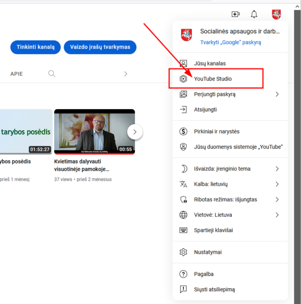
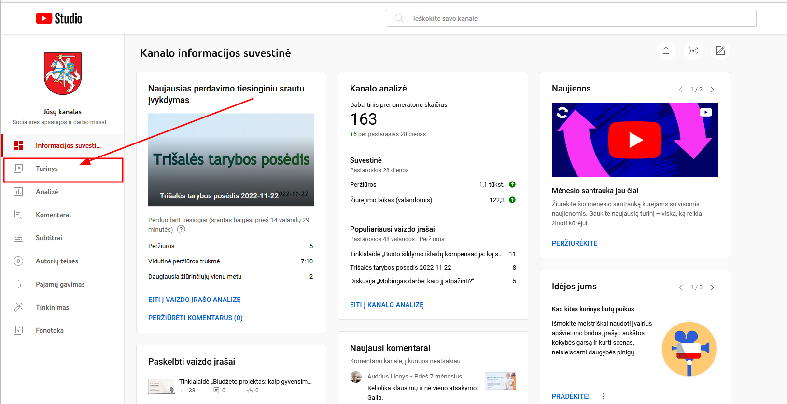
Jeigu ieškomas transliacijos video eiti į Tiesioginiai srautai
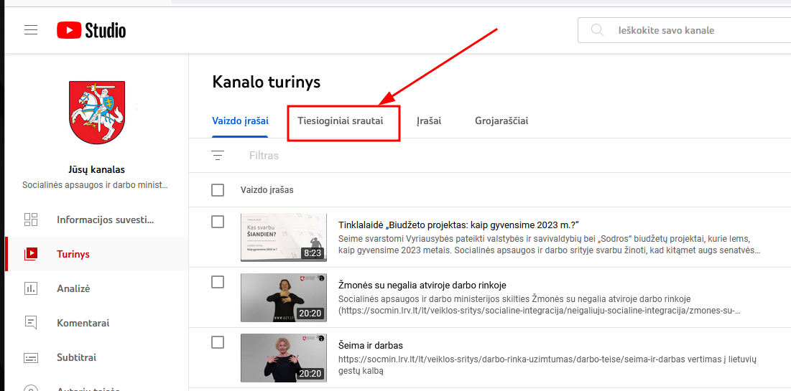
Ir susirasti norimą transliacijos video įrašą
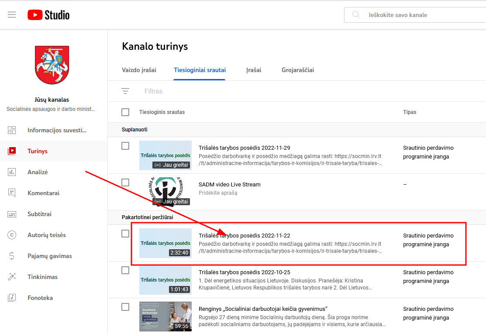
Jį atidarius, galima kitame naršyklės skirtuke atidaryti nuorodą į patį video
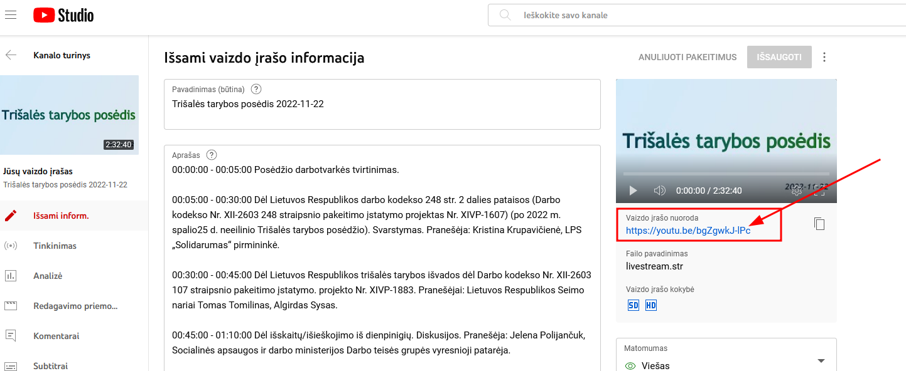
Dabar galima pradėti klausytis video, vesti protokolą bei žymėti laiką, kada buvo aptariama kuri tema (žr. Section 4.4 punktas).
4.3 Transliacijos video parsiuntimas
Kaip jau minėta viršuje, į TT aplanką reikia įtraukti ir transliacijos video įrašą. Taip daroma siekiant išsaugoti video, kuris buvo naudojamas transliacijai ir laiko žymų nustatymui, protokolo rašymui. Šis video gali skirtis nuo to, kurį įrašo renginio organizatorius, pvz., gali skirtis įrašymo pradžia, atitinkamai laiko žymos neatitiktų.
Šiame lange
Spaudžiama ant ...
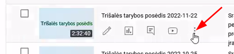
Tada spaudžiama Atsiųsti. Video parsiuntimas yra lėtas ir gali trukti ganėtinai ilgai, todėl rekomenduoja tai padarytų visų darbų pradžioje.
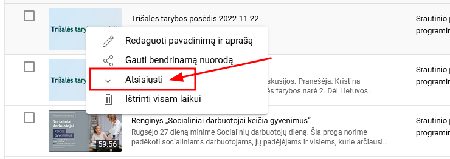
Parsiųstam video failui pakeičiamas pavadinimas: YYYY_MM_DD_video_TT ir failas įkeliamas į viršuje minėto (Section 4.1) aplanko sub-aplanką video_įrašas.
Mokymų video įraše buvo panaudotas klaidingas transliacijos video pervadinimo formatas!
4.5 Video aprašo pildymas
PavadinimasTrišalės tarybos posėdis YYYY-MM-DD
Aprašas- Čia perkeliami
copy & pastebūdų C ir D stulpeliai iš viršuje minėto excelio failo (Section 4.4) - siekiant geresnio matomumo padaromi tarpeliai tarp pavienių punktų
- Pabaigoje paliekama standartinė nuoroda į SADM tinklapį:
Posėdžio darbotvarkę ir posėdžio medžiagą galima rasti: https://socmin.lrv.lt/lt/administracine-informacija/tarybos-ir-komisijos/lr-trisale-taryba/trisales-tarybos-posedziai
- Čia perkeliami
- Pasitikrinama ar
MatomumasyraViešas
Galima kopijuoti ir tik A+D stulpelius (vietoj C+D). Youtube taip pat atpažįsta jog tai laiko žymos. Taigi ar aprašė laiko žyma HH:MM:SS - HH:MM:SS (laikas nuo iki), ar tik HH:MM:SS (laikas nuo), nekeistų to, kaip Youtube veikia. Tai labiau skonio reikalas.
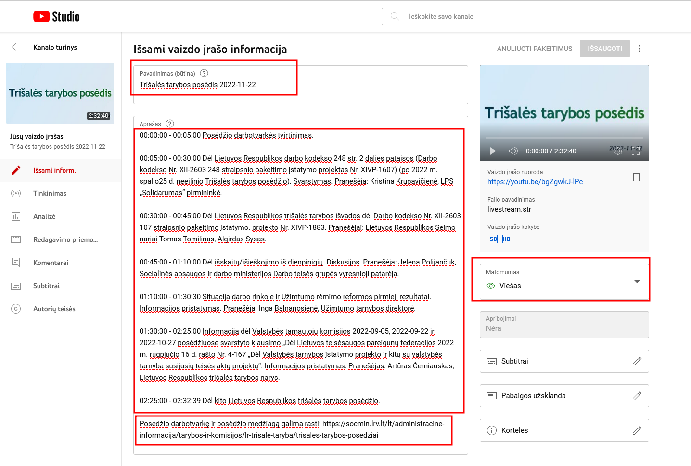
Miniatiūra- sukurta užsklanda, kuri buvo panaudota kuriant transliacija (2 skyrius)Grojaraščiai, paspaudus pasirenkamas reikiamas grojaraštis, TT atveju:Trišalės tarybos posėdžiai. Jeigu tai ne TT posėdis, o kurios nors darbo grupės, gali reikėti sukurti naują grojaraštį ir jam priskirti šią transliaciją.- Patikrinama ar
Auditorija-Ne, jis neskirtas vaikams - Spaudžiama ant
RODYTI DAUGIAU
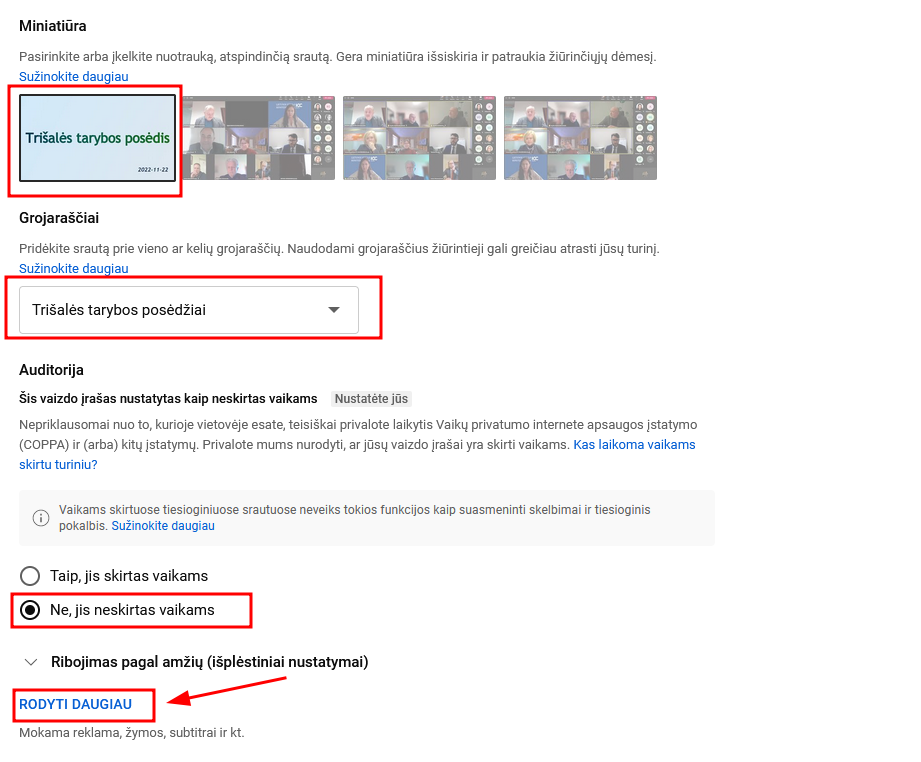
Žymoslangecopy & pastebūdų sukeliamos asociacijos žymos (tags) iš excel failo
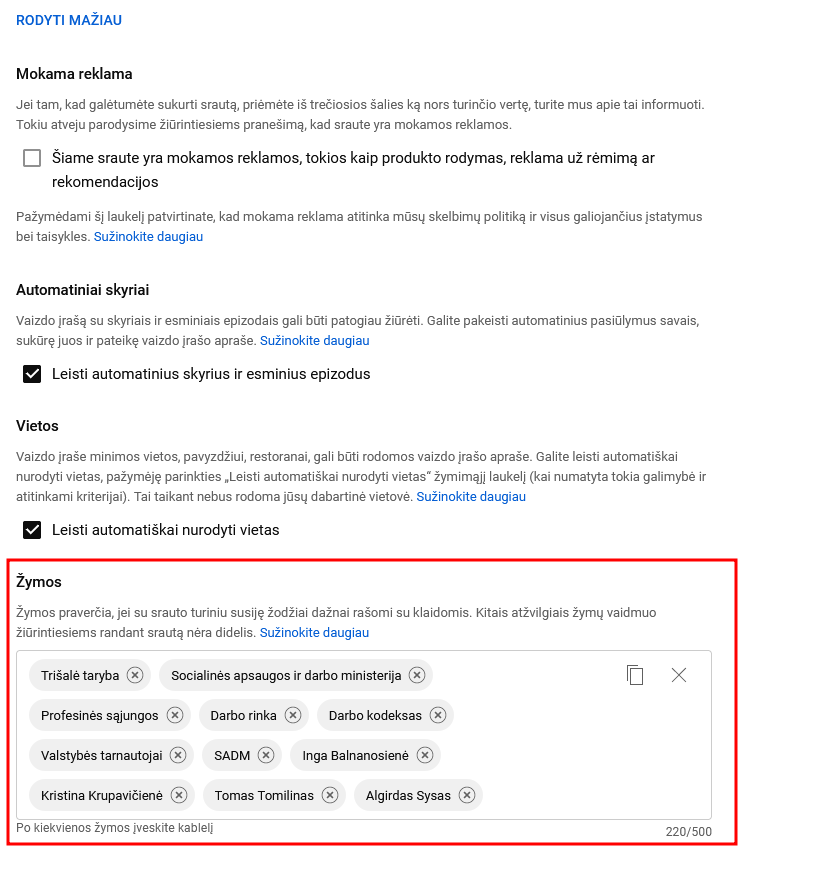
Srauto kalbanustatomalietuviųPavadinimo ir aprašo kalbanustatomalietuviųĮrašymo datanustatoma transliacijos dataSrauto vietovėnustatomaVilnius- Patikrinama ar
KategorijayraNaujienos ir politika

Patikrinus visus laukelius, spaudžiama ant IŠSAUGOTI: 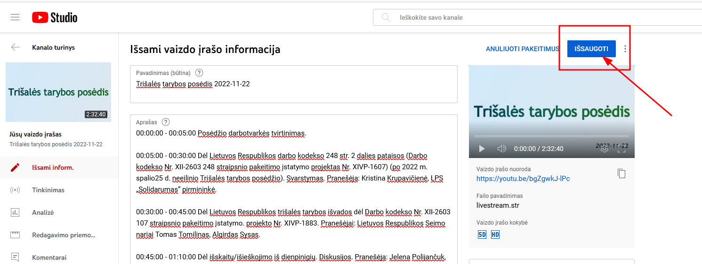
Kaip atrodo video, galima patikrinti jį atsidarius atskirame naršyklės lape:
4.6 Failų paruošimas tinklapiui
Šiuo metu SADM tinklapyje taip atrodo sukeliama posėdžių medžiaga:
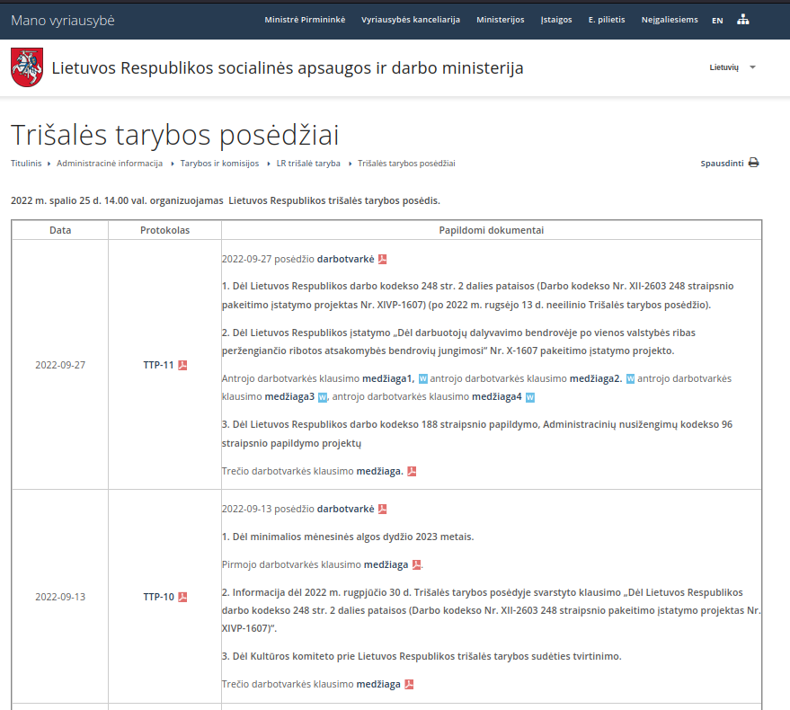
Tokiame sukėlime ne retai trūksta pranešėjų skaidrių (pvz., 2022-11-22 UŽT skaidrių ir tt.)
Ir bendrai, visas formatas nėra labai patogus vartotojams
Rekomendacija keisti į tokį formatą:
| Data | Formatas | Programa | Medžiaga | Video |
|---|---|---|---|---|
| 2022-09-27 | Trišalė taryba | 1…. 2…. 3…. |
archyvas.zip | Youtube |
| 2022-09-13 | Trišalė taryba | 1…. 2…. 3…. |
archyvas.zip | Youtube |
| …. | Trišalė taryba | 1…. 2…. 3…. |
archyvas.zip | Youtube |
Formatasgalėtų būtiTrišalė tarybabei komisijų ir komitetų posėdžiai, jeigu būtų priimtas sprendimas ir juos transliuotiProgramagalėtų būti 1:1 programai, kurį būna paruošta prieš posėdį, tik galbūt vertėtų ją trumpintiMedžiagaį.ziparchyvą suarchyvuotas visas posėdžio aplankas (žr. Section 4.6.1 )Videonuoroda į Youtube transliacijos įrašą- Idealiu atveju būtų galima šią lentelę filtruoti (pagal datą, formatą, programos raktažodį)
4.6.1 Archyvo paruošimas
Po posėdžio surinkus visus failus, pranešimo medžiagas, parsisiuntus transliacijos video iš Youtube, viskas sukeliama į lokalų aplanką, arba tiesiai į aplanką esantį TEAMS, pvz., jeigu aplankas sukurtas jau ruošiantis posėdžiui, t.y. ruošiant aplanką kaip siūloma 2 skyriuje.
- jeigu aplankas ruošiamas lokaliai (kompiuteryje), tada posėdžio aplankas paverčiamas
.ziparchyvu
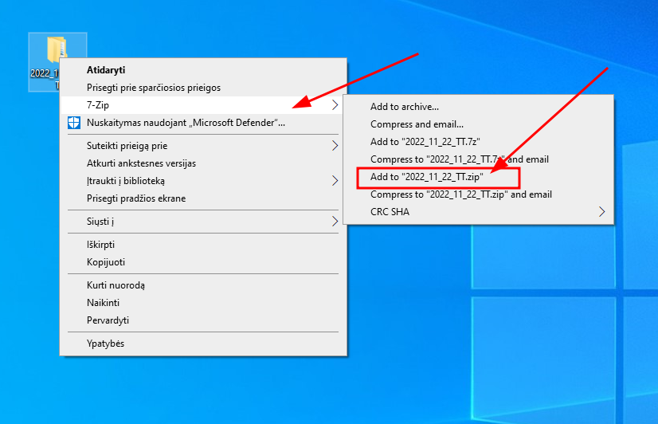
- jeigu aplankas naudojamas jau iš
TEAMSplatformos, tada būtina jį pirma atsiųsti:
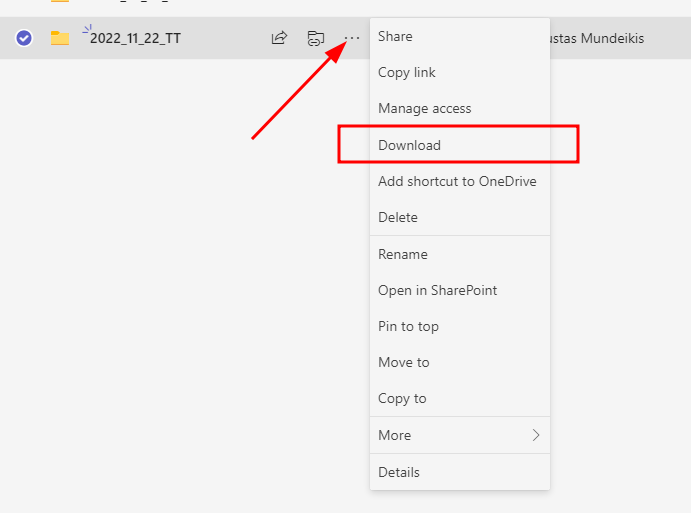
- parsiųstas failas jau yra reikiamu
.zipformatu ir šį archyvą galima tiesiogiai naudoti prisegant į SADM tinklapį kaip archyvą (taip kaip dabar daroma su.pdfir.docxfailais)
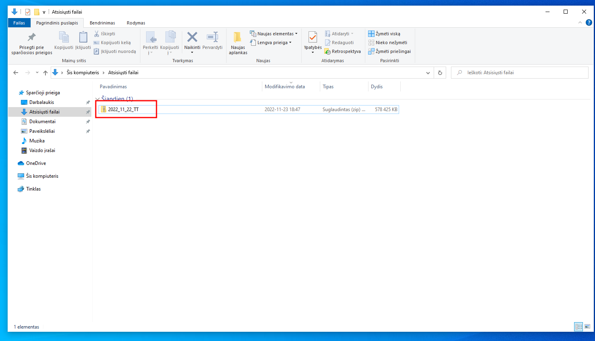